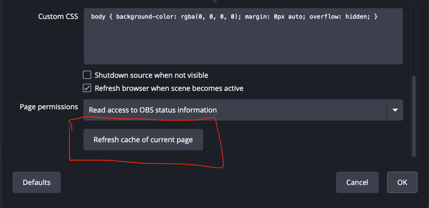
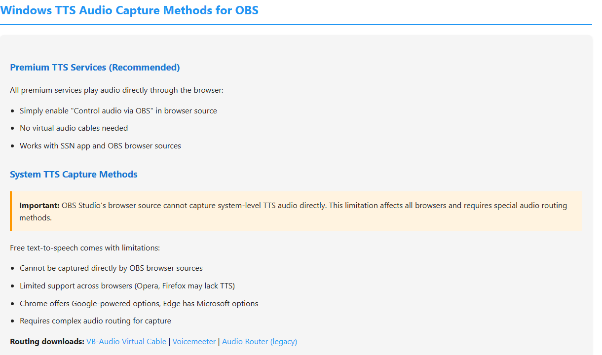

從停駐面板開始
停駐面板是最快的測試方式。如果停駐面板為空，先不要除錯 OBS。請先修復平台來源。

取代已儲存的 OBS URL 並重新整理快取
依此順序操作。僅重新整理快取不會將變更後的工作階段、密碼或伺服器路由選項新增至舊 URL。
- 在 Social Stream Ninja 中，為您實際使用的停駐面板或疊加畫面複製新產生的連結。複製整個連結，不要手動編輯參數。
- 在 OBS 中，在下列位置找到 Social Stream 來源： 來源，按滑鼠右鍵並選擇 內容.
- 請確認 本機檔案 未勾選。選取下列欄位中的全部內容： URL，然後將新連結貼上以取代舊連結。

- 捲動至屬性視窗底部並點按 重新整理目前頁面快取.
- 點選 確定，然後從 Social Stream Ninja 傳送一則模擬測試訊息。

如果仍未更新： 關閉屬性，重新開啟並重複測試。最後才考慮移除瀏覽器來源，並使用新連結重新建立。
重新開啟停駐面板連結
關閉舊停駐面板頁面或視窗，然後點按新產生的 停駐面板 連結，位於 Social Stream Ninja 中。如果它被儲存為 OBS 自訂瀏覽器停駐面板，請開啟 停駐面板 → 自訂瀏覽器停駐面板，取代其 URL，套用變更，再重新開啟該停駐面板。
判斷流程
| 測試 | 含義 | 下一步 |
|---|---|---|
| 停駐面板為空 | 來源／平台擷取尚未正常運作。 | 檢查登入、直播頁面、彈出聊天／來源頁面、應用程式模式或平台指南。 |
| 停駐面板正常，瀏覽器疊加畫面正常 | 問題很可能出在 OBS 瀏覽器來源。 | 重新整理 OBS 來源，檢查 URL、尺寸、可見性、快取與自訂 CSS。 |
| 停駐面板正常，瀏覽器疊加畫面空白 | 疊加畫面頁面錯誤、工作階段錯誤，或沒有符合的承載資料。 | 使用相同工作階段，並選擇符合預期輸出的頁面。 |
| 影像正常，TTS 無聲 | 音訊路由問題。 | 檢查供應商 TTS 與系統 TTS 的差異，以及 OBS 音訊擷取。 |
檢查疊加畫面 URL
所有位置使用完全相同的工作階段 ID。一個字元的差異就會建立另一個房間。
https://socialstream.ninja/dock.html?session=YOUR_SESSION
https://socialstream.ninja/featured.html?session=YOUR_SESSION

TTS 在 OBS 中無聲時
一般系統 TTS 是常見陷阱。它可能透過喇叭發聲，而 OBS 瀏覽器來源卻聽不到任何聲音。

詳細說明： TTS 設定指南.
常見解決方式
- 取代已儲存的 URL，然後重新整理瀏覽器來源快取.
- 使來源可見，並檢查寬度／高度是否過小。
- 暫時移除自訂 OBS CSS，以排除文字隱藏或不透明度問題。
- 在一般瀏覽器中開啟相同的 OBS URL，以區分 OBS 問題與 Social Stream Ninja 問題。
如果支援人員已確認 Windows 權限不符，請參照 以系統管理員身分執行 OBS 與 Social Stream。系統管理員模式不是解決停駐面板空白的常規方法。